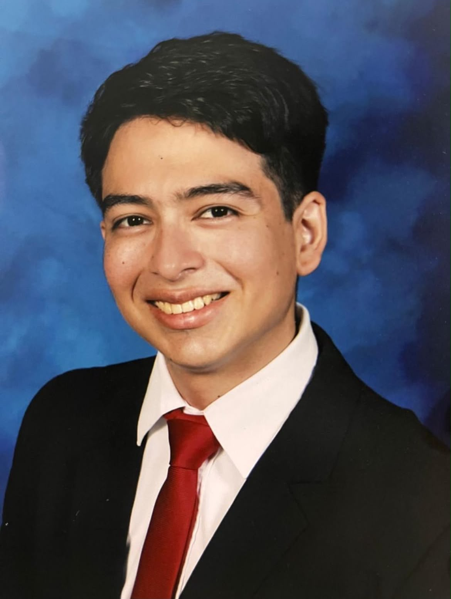
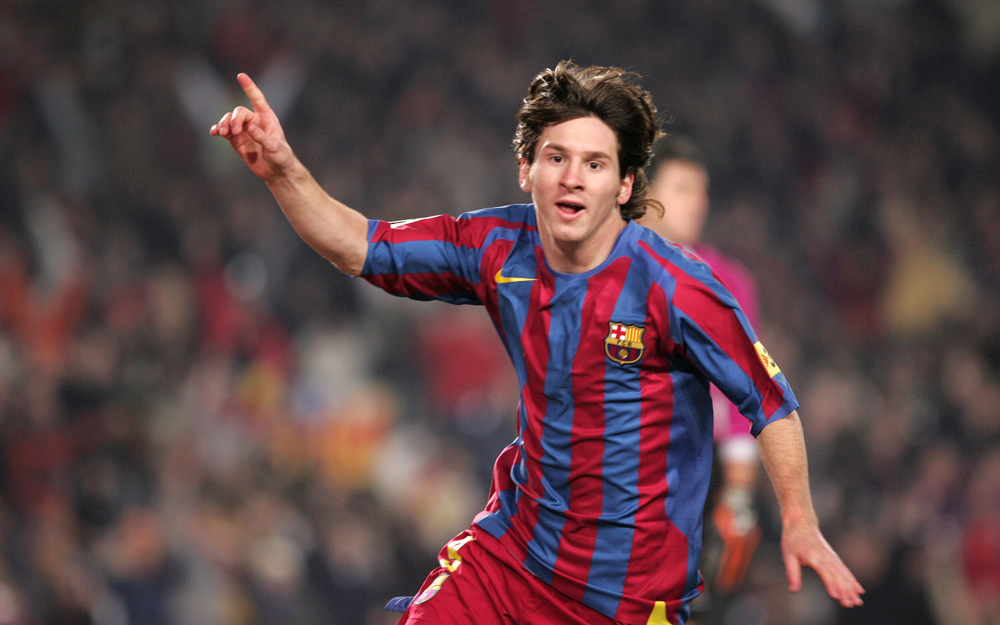
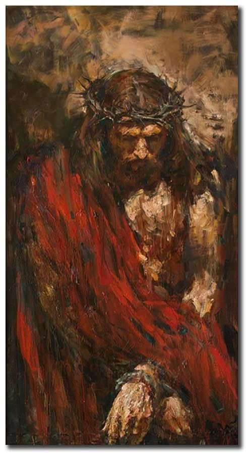
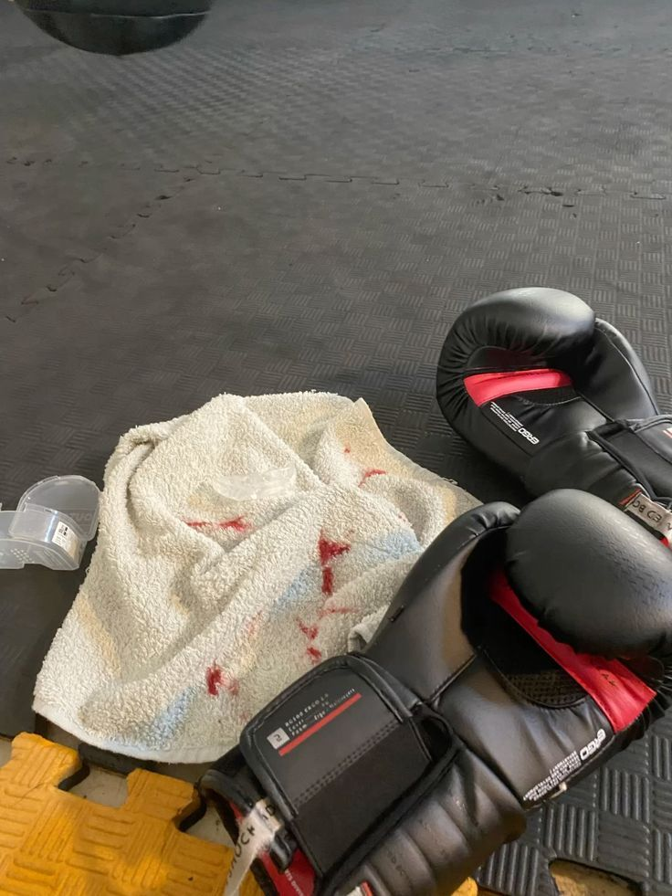

Nace un lunes 16 de marzo del año 2005. Junto a su padre Ricardo, su madre Martha, y sus hermanos: Kevin, Ricardo y Fernando. Toda su vida estudió en New Life Christian School, colegio que le ayudó a hablar el idioma inglés y abrir múltiples puertas en su vida. Hijo de Dios, creyente de la Palabra y activo en la Iglesia Bautista Vida Nueva. Ahora en día, estudia Ingeniería de Software y Negocios Digitales en la ESEN, su universidad soñada, a la cual fue difícil entrar para él. Se entretiene jugando a la Play, viendo fútbol, practicando kickboxing y platicando con sus seres queridos. Un hombre feliz, tranquilo, muy defectuoso pero con ganas de mejorar siempre.
Sus pasiones

Fútbol

Dios

MMA
Sus sueños
"Quisiera especializarse en ciberseguridad. Trabajar en el país para sacarlo adelante. Vivir en una casa con garaje espacioso, con dos autos a su nombre. Casarse con su novia, tener dos hijos y una casa grande y acogedora con una cocina muy espaciosa. Pero sobre todo, glorificar a Dios como nunca antes lo ha hecho."